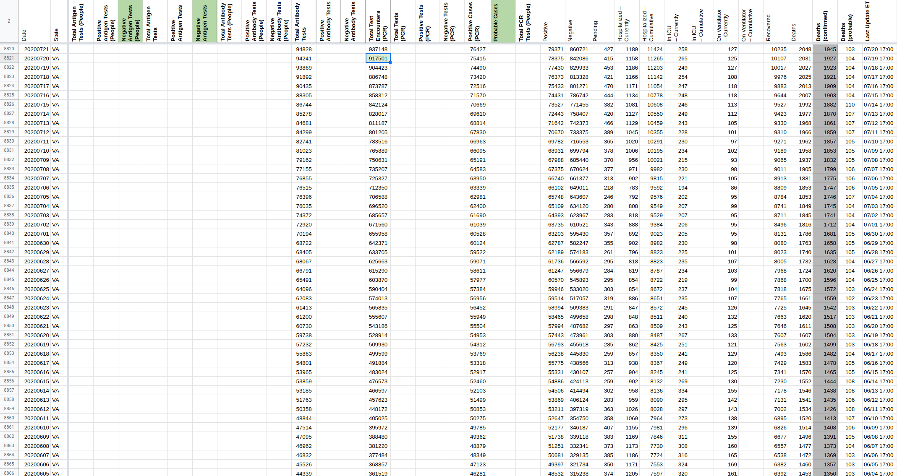
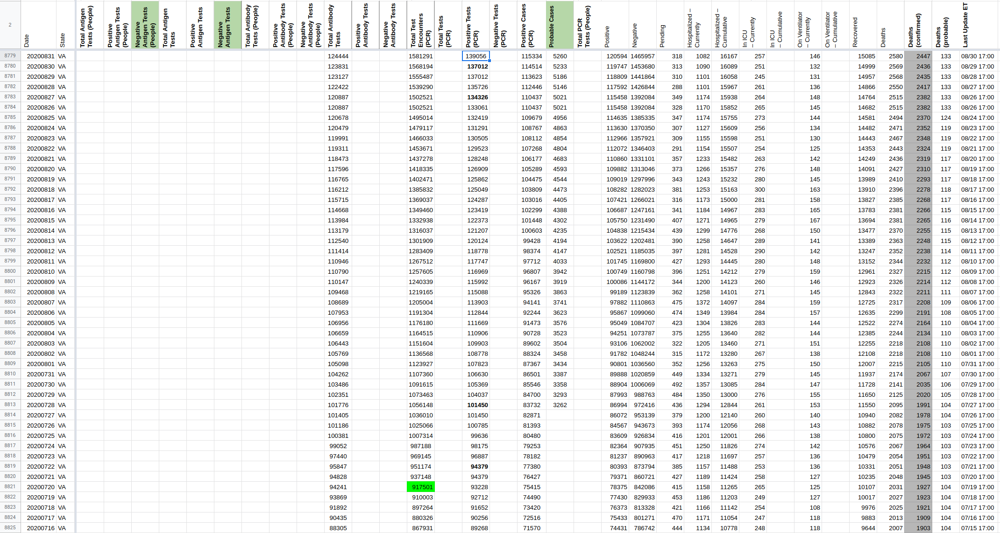

[VA] Test Encounters backfill
Issue number 790
space-buzzer opened this issue on August 25, 2020 at 2:23 pm
Labels Data quality Backfill
VA has a full time series of test encounters but we started collecting it beginning of May.
Need to backfill, need to decide how to backfill
Updated PCR test encounters and PCR positive tests: Backfilled test encounters ad positive tests from the “Tests_by-LabReportDate” dataset, as captured on 2020-07-20 Between 20-7-2020 and today, positive PCR tests were filled from their respective daily sums as show on the dashboard and the “Tests_by-LabReportDate” dataset (changes daily)
 
va_pre_20200831[DataStore]Coronavirus numbers by state - [Raw]StatesDaily.csv.txt va_post_20200831[DataStore]Coronavirus numbers by state - [Raw]StatesDaily.csv.txt